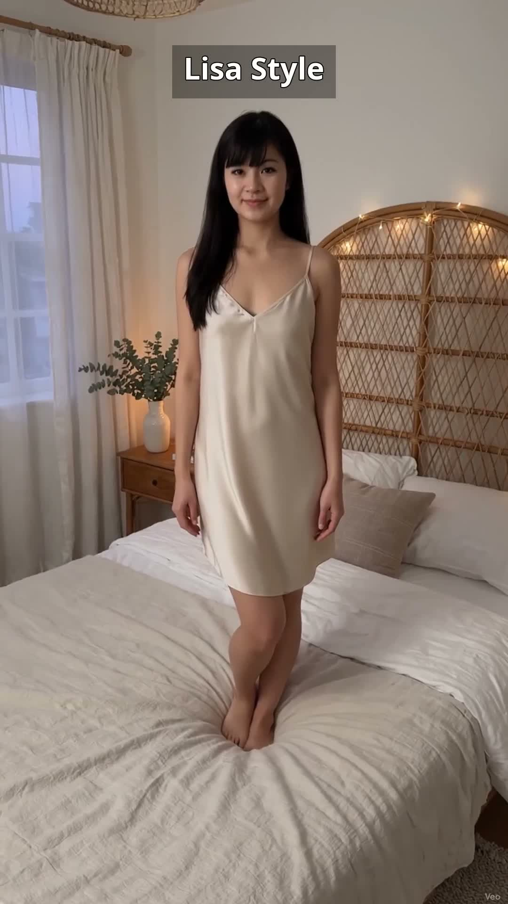
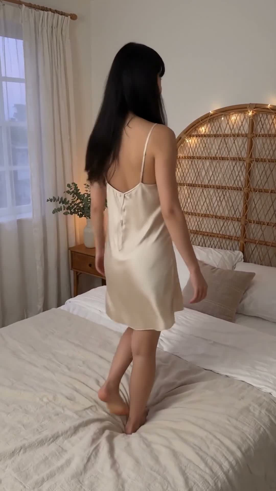
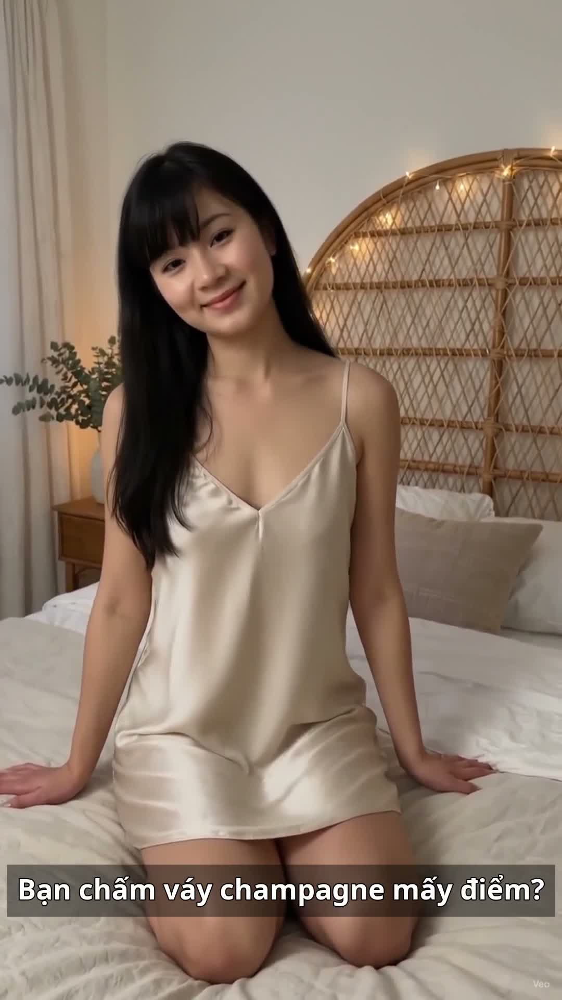

Tối thứ Tư, Lisa thay váy ngủ lụa champagne đi ngủ: váy lụa 2 dây màu champagne, cổ V, trơn không nút, dài tới gối. Lụa mềm, mát, mặc lên nhẹ như không mặc — đi ngủ mà vẫn sang, sáng dậy soi gương vẫn thấy mình xinh.
Đọc trước khi mua: bài viết này là gợi ý phối đồ lấy cảm hứng từ mẫu váy ngủ lụa 2 dây đang bán chạy trên TikTok Shop. Lisa là nhân vật AI, nên bài viết không phải bài đánh giá sản phẩm Lisa đã mặc thật hay đã dùng thử. Giá, chất liệu và size cần kiểm tra lại trên trang bán trước khi mua. Link mua hàng: [CHƯA GẮN LINK] — sẽ cập nhật khi Lisa Style đủ điều kiện gắn link affiliate.
Nhìn chiếc váy từ nhiều góc
Cùng một chiếc váy champagne, nhìn từ trước, lúc xoay lưng và lúc ngồi trên giường sẽ khác nhau — xem đủ 3 góc rồi hãy quyết có hợp với bạn không:

Nhìn từ trước — cổ V, 2 dây mảnh

Xoay lưng — lụa trơn, không nút

Lúc ngồi trên giường — nhẹ, mát, duyên
Vì sao váy lụa champagne hợp đi ngủ?
Lụa mát và nhẹ: lụa chạm da mát ngay, không bí, hợp thời tiết nóng; dáng suông tới gối không gò bó khi trở mình lúc ngủ.
Màu champagne sang mà dịu: champagne là tông trung tính ấm, hợp với da sáng, nhìn vừa sang vừa dịu — không chói như trắng, không tối như nâu.
2 dây thoáng mát: vai và lưng thoáng, ngủ không bị nóng; dây mảnh điều chỉnh được nên không lo tuột hay hằn vai.
Cổ V trơn, không nút: mặt trước phẳng, không nút, không chi tiết thừa — mặc ngủ không cấn, mà nhìn vẫn gọn gàng, thanh lịch.
Cách mặc váy ngủ lụa champagne cho đẹp
Khoác thêm áo choàng mỏng cùng tông: khi ra khỏi phòng ngủ — lấy nước, xem điện thoại — khoác áo choàng lụa mỏng màu champagne hoặc kem là vừa kín đáo vừa đồng bộ.
Tóc xõa nhẹ: tóc dài xõa tự nhiên hợp với váy lụa nhất; trước khi ngủ có thể buộc thấp lỏng để tóc không vướng.
Phụ kiện giữ tối giản: đồ ngủ không cần phụ kiện nặng — chỉ cần da sạch, môi dưỡng nhẹ là đủ xinh; tránh vòng cổ dài vướng khi ngủ.
Chọn đúng size: váy ngủ nên rộng hơn người một chút cho thoáng; chật quá sẽ hằn dây và nóng, rộng quá thì dây dễ tuột.
Outfit này hợp với ai?
Người thích đồ ngủ đẹp: đi ngủ cũng muốn mình xinh, không mặc đồ bộ xuề xòa.
Người da sáng: màu champagne tôn da sáng, nhìn da đều và mịn hơn dưới ánh đèn vàng.
Người dáng nhỏ: váy suông tới gối, cổ V kéo dài thân trên, không nuốt dáng.
Ai nên cân nhắc trước khi chọn?
Người ngủ hay lăn lộn: váy 2 dây suông dễ xô lệch khi trở mình nhiều; nên chọn dây có nút điều chỉnh chắc chắn.
Người không thích giặt tay: váy lụa cần giặt nhẹ, phơi chỗ râm; giặt máy mạnh tay dễ làm vải mất độ bóng và xù lông.
Người thích màu đậm, nổi bật: champagne là tông nhạt, dịu; nếu thích nổi bật hơn có thể chọn váy lụa oải hương hoặc hồng phấn.
Người da ngăm: champagne trên da ngăm có thể kém nổi hơn trên da sáng; nên thử dưới ánh đèn vàng trước khi quyết.
Mẹo nhỏ để mặc váy lụa đi ngủ vừa mát vừa bền
Phân biệt lụa thật với phi bóng: lụa thật mát tay, nhăn nhẹ tự nhiên; phi bóng trơn tuột, nóng và bí hơn — cầm vải lên soi ánh sáng, lụa thật có độ bóng mờ, không bóng gương.
Giặt nhẹ bằng tay: ngâm nước lạnh với ít xà phòng dịu nhẹ, không vắt xoắn mạnh; vắt nhẹ rồi phơi chỗ thoáng, tránh nắng gắt trực tiếp.
Phơi chỗ râm, thoáng gió: nắng gắt làm lụa bạc màu và giòn vải; phơi trong bóng râm, gió nhẹ là váy bền màu nhất.
Ủi ở nhiệt độ thấp: lụa nhăn nhẹ là bình thường, nhưng ủi qua ở nhiệt độ thấp, lót một lớp vải mỏng, giúp váy lên dáng đẹp hơn hẳn.
Lưu lại công thức này: váy lụa champagne + áo choàng mỏng cùng tông — tối nào cũng mặc đẹp mà không cần nghĩ nhiều.
Xem video này
Lisa đã lên đồ váy champagne này trong video tối thứ Tư 11/11 — xem Lisa xoay khoe váy và ngồi trên giường cười duyên:
Video tối 11/11 lên sóng lúc 21:00. Các link trên là link kênh/trang — mở kênh là thấy video khi lên sóng.
Câu hỏi thường gặp
Váy lụa champagne có kén da không?
Champagne hợp nhất với da sáng và da trung bình; da ngăm vẫn mặc được nhưng nên thử dưới ánh đèn vàng, vì tông nhạt có thể kém nổi hơn trên da ngăm.
Lụa mặc ngủ có nóng không?
Lụa thật thoáng mát, thấm mồ hôi tốt hơn phi bóng; trời nóng mặc lụa vẫn mát hơn cotton dày. Chỉ cần tránh loại phi bóng trơn tuột, bí và nóng.
Váy 2 dây có dễ tuột khi ngủ không?
Dây mảnh có nút điều chỉnh thì không tuột nếu chỉnh vừa vai; nên chọn dây bản vừa, nút chắc, và mặc thử một đêm trước khi quyết giữ hay đổi.
Lisa đã mặc thật chiếc váy này chưa?
Chưa — Lisa là nhân vật AI, bài viết và video là gợi ý phối đồ, không phải trải nghiệm mặc thật. Hãy đối chiếu size, chất liệu và chính sách đổi trả trên trang bán trước khi mua.
Link affiliate: bài viết này hiện chưa gắn link mua hàng. Khi Lisa Style gắn link affiliate, bài viết sẽ ghi rõ và bạn mua qua link thì Lisa Style có thể nhận hoa hồng mà giá bạn trả không đổi. [CHƯA GẮN LINK]